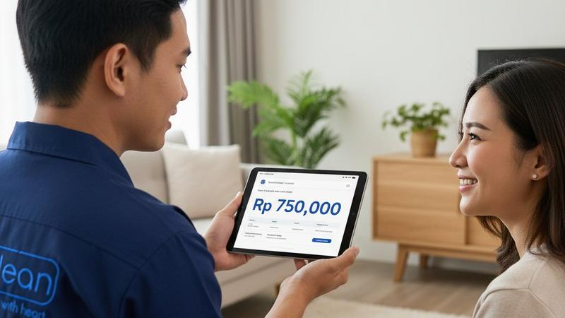
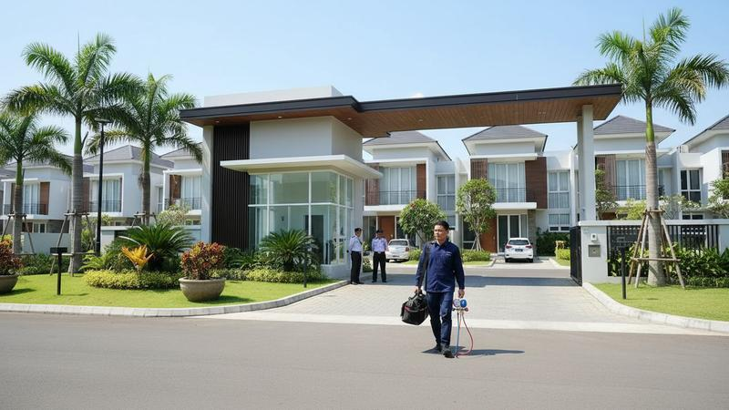
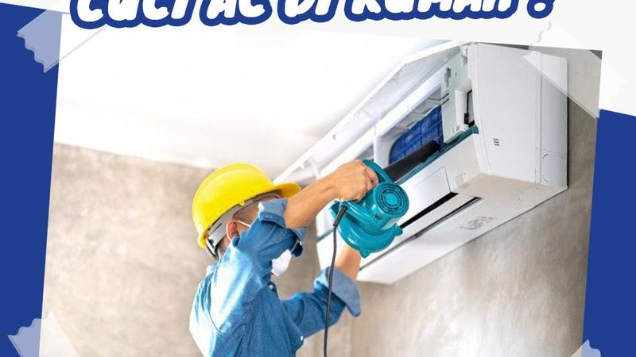
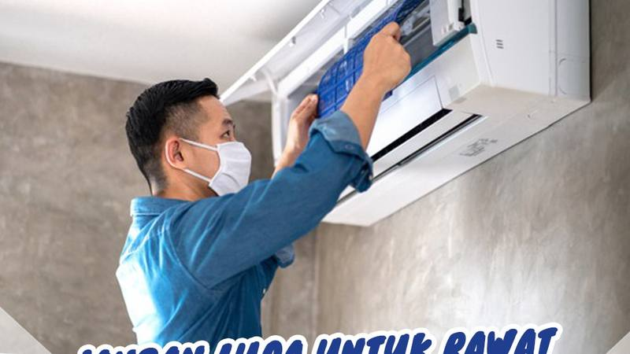

Biaya Service AC 2026: Panduan Lengkap Harga Service AC Tangerang
Panduan lengkap biaya service AC di Tangerang Selatan tahun 2026. Cleaning AC mulai Rp 85.000, service besar, isi freon, dan tips menghemat biaya service.
Baca Selengkapnya →Jasa Service AC Alam Sutera Terpercaya — Cleaning AC Mulai Rp 85.000
Layanan service AC profesional di seluruh area Alam Sutera. Respons cepat 30-60 menit, teknisi berpengalaman, harga transparan.
Baca Selengkapnya →
Service AC BSD City — Cleaning AC Profesional Mulai Rp 85.000
Jasa service AC profesional di BSD City. Melayani Foresta, The Green, Nava Park, AEON Mall, dan seluruh kawasan BSD.
Baca Selengkapnya →
Service AC Gading Serpong — Cleaning AC Profesional Mulai Rp 85.000
Jasa service AC di Gading Serpong. Melayani Summarecon, Paramount, M-Town & seluruh kawasan Gading Serpong dan sekitarnya.
Baca Selengkapnya →
Cara Merawat AC Agar Awet Bertahun-tahun — 7 Tips Penting
Panduan lengkap cara merawat AC agar awet 10-15 tahun. Tips membersihkan filter, suhu ideal, dan jadwal perawatan rutin.
Baca Selengkapnya →
Tips Hemat Listrik AC di Musim Panas — 7 Cara Ampuh
Tips hemat listrik AC yang terbukti efektif. Hemat 30-50% tagihan listrik dengan 7 cara mudah dan praktis.
Baca Selengkapnya →
Kapan Harus Isi Freon AC? Tanda-tanda dan Fakta yang Perlu Diketahui
Kenali 5 tanda freon AC habis, proses pengisian yang benar, dan harga isi freon. Fakta vs mitos tentang freon AC.
Baca Selengkapnya →Mengapa AC Tidak Dingin? 7 Penyebab dan Solusi Cepat
AC menyala tapi tidak dingin? Kenali 7 penyebab utamanya mulai dari filter kotor, freon habis, hingga kompresor bermasalah.
Baca Selengkapnya →
Mengapa AC Sering Bocor? Penyebab dan Cara Memperbaiki
AC bocor bisa merusak dinding dan lantai. Pelajari 6 penyebab utama AC bocor lengkap dengan estimasi biaya perbaikan.
Baca Selengkapnya →
Perbandingan Freon R-32 vs R-410: Mana yang Terbaik?
Panduan lengkap memilih freon AC yang tepat. Perbandingan efisiensi, keamanan, harga, dan dampak lingkungan.
Baca Selengkapnya →Daftar Harga Service AC Lengkap 2026 — Tangerang & BSD
Cek harga cleaning AC, service besar, isi freon, dan pasang AC terbaru 2026 di Tangerang Selatan, BSD, dan Alam Sutera.
Baca Selengkapnya →AC Tidak Dingin? Ini 8 Penyebab & Solusi Tepatnya
AC tidak dingin bisa disebabkan freon habis, filter kotor, atau kerusakan kompressor. Pelajari penyebab dan solusi tepatnya di sini.
Baca Selengkapnya →10 Tips Merawat AC Agar Hemat Listrik & Lebih Awet
Tagihan listrik tinggi karena AC? Ikuti 10 tips merawat AC ini agar lebih hemat listrik dan performa tetap optimal sepanjang tahun.
Baca Selengkapnya →AC Berbau Tidak Sedap? Ini Penyebab & Cara Mengatasinya
Bau apek atau asam dari AC bisa jadi tanda kotoran, jamur, atau masalah serius. Kenali penyebabnya dan atasi sebelum mengganggu kesehatan.
Baca Selengkapnya →7 Tanda AC Anda Sudah Perlu di-Service Sekarang
Jangan tunggu sampai AC rusak total. Kenali 7 tanda AC perlu service agar terhindar dari biaya perbaikan yang lebih mahal.
Baca Selengkapnya →Freon R32 vs R410A vs R22: Mana yang Terbaik untuk AC Anda?
Perbandingan lengkap tiga jenis freon AC dari sisi performa pendinginan, harga, efisiensi energi, dan dampak lingkungan.
Baca Selengkapnya →Jenis-Jenis AC: Split, Window, Cassette & Standing — Mana Cocok?
Bingung memilih jenis AC? Pelajari perbedaan AC split, window, cassette, dan standing floor beserta kelebihan dan kekurangannya.
Baca Selengkapnya →Cara Memilih AC yang Tepat untuk Rumah Anda — Panduan 2026
Panduan memilih AC berdasarkan ukuran ruangan, kapasitas PK, merek terbaik, dan budget. Jangan salah beli sebelum baca ini!
Baca Selengkapnya →Kapan AC Harus Diganti? Ini 6 Tanda yang Sering Diabaikan
Terkadang memperbaiki AC terus-menerus lebih mahal dari membeli baru. Kenali 6 tanda AC sudah waktunya diganti unit baru.
Baca Selengkapnya →